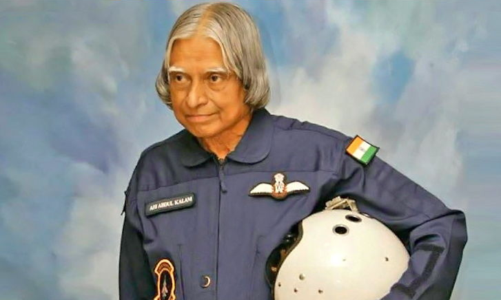

11th President of India, In office 25 July 2002 – 25 July 2007.
Major Events in Former President's Life
- 1931: A. P. J. Abdul Kalam is born on 15 October Rameswaram, Madras Presidency, British India
(present-day Tamil Nadu, India)
- 1954: After completing his education at the Schwartz Higher Secondary School, Ramanathapuram, Kalam went on to attend Saint Joseph's College, Tiruchirappalli, then affiliated with the University of Madras, from where he graduated in physics.
- 1955: Kalam moved to Madras in 1955 to study aerospace engineering in Madras Institute of Technology.
- 1960: Kalam graduated from the Madras Institute of Technology and joined the Aeronautical Development Establishment of the Defence Research and Development Organisation as a scientist after becoming a member of the Defence Research & Development Service (DRDS).
- 1963 to 1964:Kalam visited NASA's Langley Research Center in Hampton, Virginia; Goddard Space Flight Center in Greenbelt, Maryland; and Wallops Flight Facility.
- 1969: Kalam was transferred to the Indian Space Research Organisation (ISRO) where he was the project director of India's first Satellite Launch Vehicle (SLV-III).
- 1970's: Kalam also directed two projects, Project Devil and Project Valiant, which sought to develop ballistic missiles from the technology of the successful SLV programme.
- 1992 to 1999: Kalam served as the Chief Scientific Adviser to the Prime Minister and Secretary of the Defence Research and Development Organisation.
- 1998: Kalam along with cardiologist Soma Raju, Kalam developed a low cost coronary stent, named the "Kalam-Raju Stent".
- 2002 to 2007: Kalam served as the 11th President of India.
- 2012: Kalam launched a programme for the youth of India called the What Can I Give Movement, with a central theme of defeating corruption.
- 2015: Kalam travelled to Shillong to deliver a lecture on "Creating a Livable Planet Earth" at the Indian Institute of Management Shillong.
Awards and honours
- Kalam received 7 honorary doctorates from 40 universities
- The Government of India honoured him with the Padma Bhushan in 1981 and the Padma Vibhushan in 1990 for his work with ISRO and DRDO and his role as a scientific advisor to the Government.
- In 1997, Kalam received India's highest civilian honour, the Bharat Ratna, for his contribution to the scientific research and modernisation of defence technology in India.
- In 2013, he was the recipient of the Von Braun Award from the National Space Society "to recognize excellence in the management and leadership of a space-related project".
- In 2012, Kalam was ranked number 2 in Outlook India's poll of the Greatest Indian.